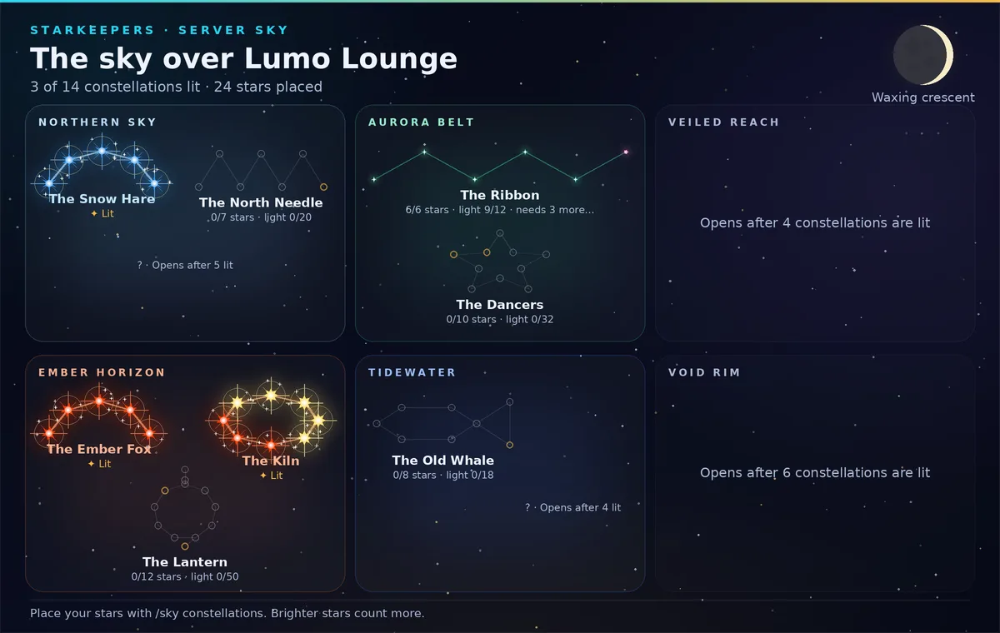

Moonlit Café · sample
Starkeepers
Your server’s shared night sky.

Server sky Beta
On42 stargazers so far. Tonight’s server goal: 7 of 12.
Members catch stars every night, grow their own sky and light constellations together. Free, no AI. Stardust comes from chatting and games, never from coins.
Try it in Discord
/sky watchcatches tonight’s free star/sky starshows a star’s profile
Shooting starsObservatoryHunts
Shooting stars
OnAbout 3 times a day, at random times between 10:00 and 23:00 ET, a star falls in this channel. The first 3 people to press the button keep it. Off until you pick a channel.
Observatory
OnA personal building members level up with trip fragments and stardust: a second trip slot, shorter trips, nightly task rerolls and a telescope that sometimes spots a shooting star they missed. It only spends stardust, never pays it, and never changes rarity odds. On by default.
Hunts
OnMembers pick a team of up to 3 stars and battle stars dulled by the Dimming. A win rekindles the star: a little stardust (at most 25 a night from hunts) and a chance it joins them. Wild stars only come from rarities the member has unlocked. One hunt every 30 seconds. On by default.